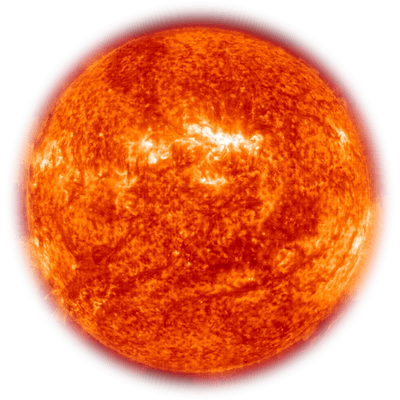

Soleil

Le Soleil est l'étoile au centre du système solaire. Il est presque parfaitement sphérique et consiste en un plasma chaud entrelacé de champs magnétiques.
Distance jusqu'à Terre: 149 600 000 km (92 96 000 000 km)
Température de surface: 5 778 K
Masse: 1,998E30 kg.
Mercure

Mercure est la plus petite et la plus proche du Soleil parmi les huit planètes du système solaire, avec une période orbitale d’environ 88 jours Terre. Surface: 28,88 millions de miles carrés (74,8 millions de km²) Rayon: 2 440 km Période orbitale: 88 jours Distance du Soleil: 35 980 000 miles (57 910 000 km) Masse: 328,5E21 kg (masse de 0,055 Terre) Durée du jour: 58j 15h 30m
Venus
Vénus est la deuxième planète du Soleil, la gravitant tous les 224,7 jours en Terre. Il n'a pas de satellite naturel. Il est nommé d'après la déesse romaine de l'amour et de la beauté. Surface: 177,7 millions de miles carrés (460,2 millions de km²) Rayon: 6 052 km Durée de la journée: 116j 18h 0m Masse: 4.867E24 kg (masse de 0.815 Terre) Période orbitale: 225 jours Gravité: 8.87 m / s²
Terre

Terre, également connue sous le nom de monde, Terra ou Gaia, est la troisième planète du Soleil, la plus dense du système solaire, la plus grande des quatre planètes terrestres du système solaire et le seul corps céleste connu pour accueillir la vie. Age: 4,54 milliards d'années Rayon: 3 379 km (6 371 km) Distance du Soleil: 149 600 000 km Masse: 5.972E24 kg Population: 7,046 milliards (2012)
Mars

Mars est la quatrième planète du Soleil et la deuxième plus petite planète du système solaire, après Mercure. Gravité: 3.711 m / s² Surface: 55,91 millions de miles carrés (144,8 millions de km²) Rayon: 2 390 miles (3 390 km) Masse: 639E21 kg (masse de 0,107 Terre) Période orbitale: 687 jours
Ceinture d'astéroides
La ceinture principale d'astéroïdes (parfois juste ceinture d'astéroïdes ou ceinture principale) est une région du Système solaire située entre les orbites de Mars et Jupiter. Elle contient un grand nombre d'astéroïdes. La ceinture d’astéroïdes contient la plupart des astéroïdes de notre Système solaire, comme (1417) Walinskia et des milliers d'autres.
Jupiter

Jupiter est la cinquième planète du Soleil et la plus grande planète du système solaire. C'est un géant gazier dont la masse est un millième de celle du Soleil, mais deux fois et demie la masse de toutes les autres planètes du système solaire combinées. Surface: 23,41 milliards de miles carrés (61,42 milliards de km²) Rayon: 43 441 milles (69 911 km) Masse: 1.898E27 kg (masse de 317,8 Terre) Gravité: 24.79, m / s² Période orbitale: 12 ans
Saturne

Saturne est la sixième planète du Soleil et la deuxième plus grande planète du système solaire, après Jupiter. Nommé d'après le dieu romain de l'agriculture, son symbole astronomique représente la faucille du dieu. Rayon: 36 184 km (58 232 km) Surface: 42,7 milliards de km² (16,49 milliards de miles carrés) Masse: 568,3E24 kg (masse de 95,16 Terre) Gravité: 10.44 m / s² Période orbitale: 29 ans
Uranus

Uranus est la septième planète du Soleil. Il possède le troisième plus grand rayon planétaire et la quatrième plus grande masse planétaire du système solaire. Surface: 3.121 milliards de miles carrés (8.083 milliards de km²) Rayon: 25 752 km Période orbitale: 84 ans Masse: 86.81E24 kg (masse de 14.54 Terre) Gravité: 8,69 m / s²
Neptune

Neptune est la huitième et la plus éloignée planète du Soleil dans le système solaire. C'est la quatrième plus grande planète en diamètre et la troisième en masse. Parmi les planètes gazeuses du système solaire, Neptune est la plus dense. Surface: 2.941 milliards de miles carrés (7.618 milliards de km²) Rayon: 15 299 milles (24 622 km) Période orbitale: 165 ans Masse: 102.4E24 kg (masse de 17.15 Terre) Distance du Soleil: 2,798,000,000 miles (4,503,000,000 km)